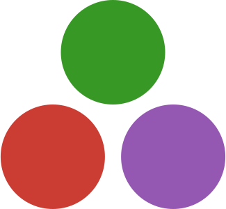

Hello!
My name is Dawson Finklea and I am a Linux System Administrator, Programmer, and IP Network Technician.
I am a recent graduate of the University of North Texas, where I earned my Bachelor's of Science in Computer Science.
Background
I am originally from Houston and Galveston, Texas. From an early age I remember having a passion for computers. When I was in elementary school, my classmates and I were given a creative writing assignment to use the website builder Weebly to create a website for whatever we wanted. Me and my best friend went about creating a detailed site, advertising ourselves as the "Alpha Team", technicians who were available, for free, to the entire school faculty, should they need assistance with any technical difficulties.
I suppose my fate was sealed then.
That same year, that same best friend took up AppleScript, Apple's scripting language for their MacOS Automation system. I was encouraged to learn it as well, though I didn't get terribly far, it helped me develop at an early age that necessary cognitive foundation for programming.
I wasn't always sat in front of a computer though. Perhaps one of the strongest through-lines of my childhood was cycling. In 2008, my father founded Chain Reaction Ministries, a volunteer organization based out of our local church at the time, which took in donated bikes from the Houston community, repaired them, and donated them to homeless shelters and other low-income assistance organizations. I spent 1 to 2 weekends out of every month working at the church repairing and riding bicycles with my friends, and other volunteers. Ever since Hurricane Harvey displaced our family in 2017, and our church closed shop a few years later, we haven't been as active, but we still have a workshop, a trailer, and a handful of bikes waiting to be put to good use.
My father instilled in my his passion for cycling, so I spent a lot of time on the bike trails around Houston, and later on the Seawall in Galveston. I participated twice in the MS150, a bicycle race from Downtown Houston to Downtown Austin.
Jack of All Trades
Throughout high school and college, my interests covered many different subjects across computing. I started using Linux regularly at the age of 16, and have since been something of a homelabber, creating my own cloud storage, music streaming, web hosting, and VPN services. I also must have had nearly 5 different iterations of my personal website, including this one. As the design of this site might suggest, I have a soft spot for the design language of user interfaces from days past, and frequently incorporate it into my work.
In my sophomore year, I attended Reykjavik University in a study abroad program, and the instruction there was a significant departure from the kind of work I had been doing at UNT. I recieved some of the best instruction of my college career in the fundamental concepts behind Machine Learning, Cryptography, Networking, and Programming Language Design, and Computer Graphics, the knowledge from which I still find incredibly useful and relevant in my career.
In the latter half of my degree, I became interested in alternative home networking solutions after I encountered a number of people in my hometown of Galveston with wireless connectivity problems. I can't say for sure what the reason was, but I suspect it was because of the nature of the construction of these historic homes. Thick, wooden walls and ceilings do not pass UHF band radio frequencies well. Many of these older homes, however, had unused phone lines, or coax cabling run throughout the building. I knew that someone must have thought to use these media to carry ethernet in the past, and sure enough, there were standards like MoCA, or G.hn, or even HomePlug for using the building's power lines.
So far, I've had one successful installation of a HomePlug system for a client in Galveston, and I hope to take advantage of these somewhat overlooked technologies to improve connectivity in places where Wi-Fi functions poorly, and installing new runs of CAT5 cabling is infeasable.
Education
University of North Texas, Denton, TX - B.S. Computer Science
AUGUST 2020 - MAY 2025
Information Technology Experience
Faust Haus, Galveston, TX — Home and Office IT Contractor
AUGUST 2021 - PRESENT
- Provided on-demand IT support for home and small office environments, including network setup, troubleshooting, and security configuration.
- Installed, configured, and maintained wired and wireless networks, including routers, switches, modems, and access points.
- Diagnosed and repaired hardware and software issues for desktops, laptops, printers, and other office equipment.
- Maintained and updated the company website and online services, including domain management, hosting, email configuration, and basic SEO practices.
- Ensured compliance with basic cybersecurity protocols and advised on improvements in IT policy and usage.
Mansard House, Galveston, TX - Network Installation Technician (Contract)
AUGUST 2024
- Installed and configured multiple WiFi access points across a large hotel property to improve guest and operational wireless coverage.
- Ran and terminated new CAT5e Ethernet cabling to support access point deployment, including routing through ceilings and walls.
- Mounted and positioned access points for optimal signal distribution and minimal interference.
- Worked with access points from multiple vendors (e.g., Ubiquiti, TP-Link, Cisco) and configured SSIDs, security protocols, and VLANs as needed.
- Conducted signal strength and coverage testing using WiFi analyzer tools to ensure consistent performance throughout the facility.
- Collaborated with hotel IT and management staff to minimize disruption to operations during installation.
The Byran Museum, Galveston, TX - IT Technician (Contract)
JUNE 2020 - JUNE 2022
- Created detailed documentation of the museum interactive exhibit kiosk system
- Updated and rewrote DCHP and static IP assignments to allow for additional kiosks to be easily added, and maintain a reasonable order.
- Collaborated with museum staff to translate and implement Spanish versions of existing exhibit articles.
- Performed network administration and system administration duties on an as-needed basis
Other Experience
Carbon Environmental, Fort Worth, TX - Fuel Systems Technician
MAY 2021 - JULY 2021
- Installed, maintained, and repaired fuel delivery systems at gas stations and industrial refueling sites, ensuring equipment met operational and safety standards.
- Laid electrical and data conduit to support pump operations, sensor systems, and fuel monitoring equipment.
- Disassembled, serviced, and reassembled fuel dispensers and underground storage tank components including spill buckets, overfill prevention valves, and piping
- Collaborated with a team of technicians to coordinate site work, troubleshoot system issues, and deliver efficient project execution.
- Performed system leak detection tests and ensured proper containment and grounding of fuel systems.
The Kava Bar, Denton, TX - Barback
FEBRUARY 2023 - JUNE 2024
- Supported bartenders by stocking and replenishing bar supplies, ensuring efficient service
- Maintained cleanliness and organization of bar area, including restocking glassware, utensils, and napkins
- Provided exceptional customer service by promptly fulfilling drink orders and addressing customer inquiries or concerns
- Followed all safety protocols regarding handling of hazardous materials such as cleaning agents or broken glassware
Faust Haus, Galveston, TX — Home and Office IT Contractor
AUGUST 2021 - PRESENT
- Provided on-demand IT support for home and small office environments, including network setup, troubleshooting, and security configuration.
- Installed, configured, and maintained wired and wireless networks, including routers, switches, modems, and access points.
- Diagnosed and repaired hardware and software issues for desktops, laptops, printers, and other office equipment.
- Maintained and updated the company website and online services, including domain management, hosting, email configuration, and basic SEO practices.
- Ensured compliance with basic cybersecurity protocols and advised on improvements in IT policy and usage.
Mansard House, Galveston, TX - Network Installation Technician (Contract)
AUGUST 2024
- Installed and configured multiple WiFi access points across a large hotel property to improve guest and operational wireless coverage.
- Ran and terminated new CAT5e Ethernet cabling to support access point deployment, including routing through ceilings and walls.
- Mounted and positioned access points for optimal signal distribution and minimal interference.
- Worked with access points from multiple vendors (e.g., Ubiquiti, TP-Link, Cisco) and configured SSIDs, security protocols, and VLANs as needed.
- Conducted signal strength and coverage testing using WiFi analyzer tools to ensure consistent performance throughout the facility.
- Collaborated with hotel IT and management staff to minimize disruption to operations during installation.
The Byran Museum, Galveston, TX - IT Technician (Contract)
JUNE 2020 - JUNE 2022
- Created detailed documentation of the museum interactive exhibit kiosk system
- Updated and rewrote DCHP and static IP assignments to allow for additional kiosks to be easily added, and maintain a reasonable order.
- Collaborated with museum staff to translate and implement Spanish versions of existing exhibit articles.
- Performed network administration and system administration duties on an as-needed basis
Other Experience
Carbon Environmental, Fort Worth, TX - Fuel Systems Technician
MAY 2021 - JULY 2021
- Installed, maintained, and repaired fuel delivery systems at gas stations and industrial refueling sites, ensuring equipment met operational and safety standards.
- Laid electrical and data conduit to support pump operations, sensor systems, and fuel monitoring equipment.
- Disassembled, serviced, and reassembled fuel dispensers and underground storage tank components including spill buckets, overfill prevention valves, and piping
- Collaborated with a team of technicians to coordinate site work, troubleshoot system issues, and deliver efficient project execution.
- Performed system leak detection tests and ensured proper containment and grounding of fuel systems.
The Kava Bar, Denton, TX - Barback
FEBRUARY 2023 - JUNE 2024
- Supported bartenders by stocking and replenishing bar supplies, ensuring efficient service
- Maintained cleanliness and organization of bar area, including restocking glassware, utensils, and napkins
- Provided exceptional customer service by promptly fulfilling drink orders and addressing customer inquiries or concerns
- Followed all safety protocols regarding handling of hazardous materials such as cleaning agents or broken glassware
JUNE 2020 - JUNE 2022
- Created detailed documentation of the museum interactive exhibit kiosk system
- Updated and rewrote DCHP and static IP assignments to allow for additional kiosks to be easily added, and maintain a reasonable order.
- Collaborated with museum staff to translate and implement Spanish versions of existing exhibit articles.
- Performed network administration and system administration duties on an as-needed basis
Other Experience
Carbon Environmental, Fort Worth, TX - Fuel Systems Technician
MAY 2021 - JULY 2021
- Installed, maintained, and repaired fuel delivery systems at gas stations and industrial refueling sites, ensuring equipment met operational and safety standards.
- Laid electrical and data conduit to support pump operations, sensor systems, and fuel monitoring equipment.
- Disassembled, serviced, and reassembled fuel dispensers and underground storage tank components including spill buckets, overfill prevention valves, and piping
- Collaborated with a team of technicians to coordinate site work, troubleshoot system issues, and deliver efficient project execution.
- Performed system leak detection tests and ensured proper containment and grounding of fuel systems.
The Kava Bar, Denton, TX - Barback
FEBRUARY 2023 - JUNE 2024
- Supported bartenders by stocking and replenishing bar supplies, ensuring efficient service
- Maintained cleanliness and organization of bar area, including restocking glassware, utensils, and napkins
- Provided exceptional customer service by promptly fulfilling drink orders and addressing customer inquiries or concerns
- Followed all safety protocols regarding handling of hazardous materials such as cleaning agents or broken glassware
FEBRUARY 2023 - JUNE 2024
- Supported bartenders by stocking and replenishing bar supplies, ensuring efficient service
- Maintained cleanliness and organization of bar area, including restocking glassware, utensils, and napkins
- Provided exceptional customer service by promptly fulfilling drink orders and addressing customer inquiries or concerns
- Followed all safety protocols regarding handling of hazardous materials such as cleaning agents or broken glassware
Programming Languages
- Julia 
- JavaScript

- C++

- C#

- Python

- Lua

Network Services
- TCP/UDP/IP
- Domain Name System
- Internet Message Access Protocol
- Microsoft 365 / Exchange
- Microsoft Active Directory
- Virtual Private Networks
- Red Hat Enterprise Linux
- Container-based Software Deployment
Development
- Full Stack Web Development
- Dotnet Application Development
- Android Development
- Scripting and Automation